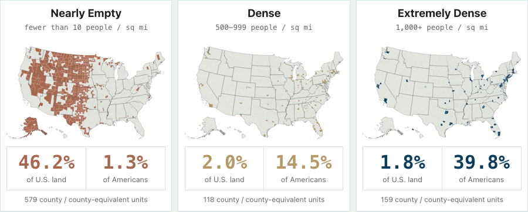
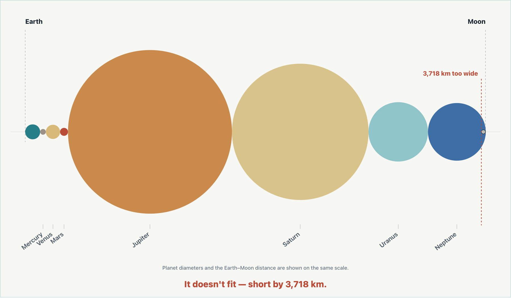
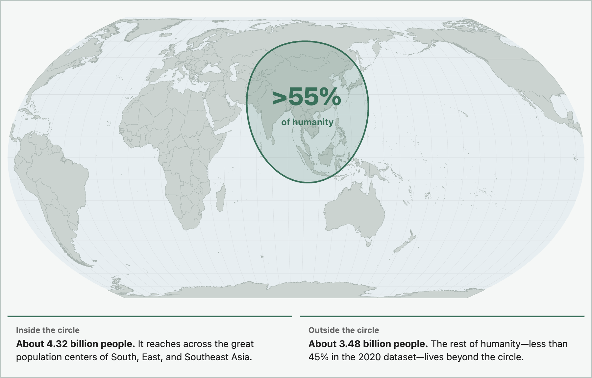
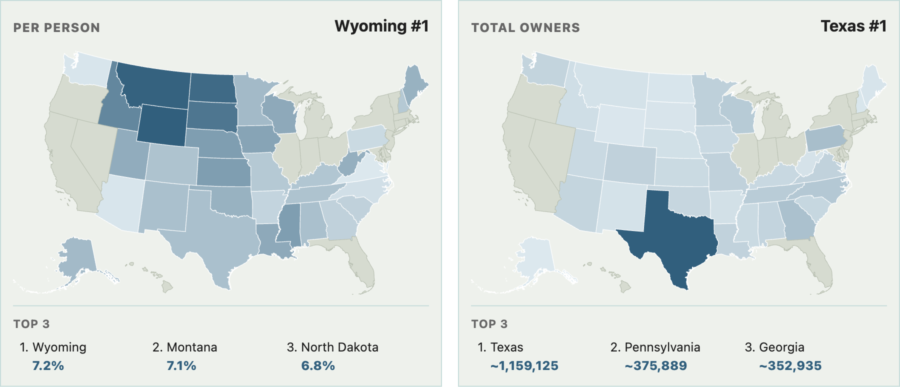
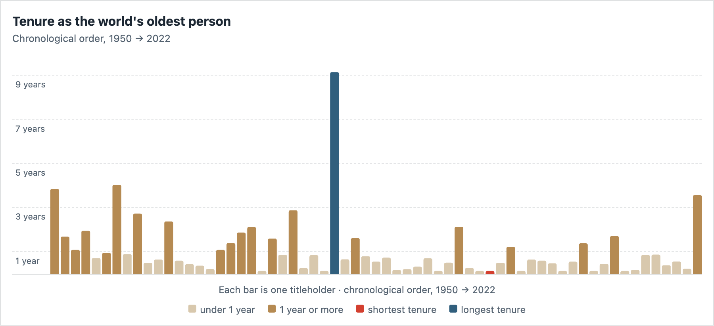
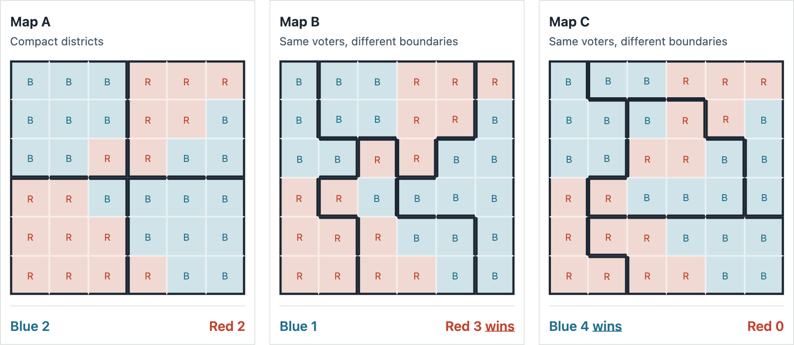
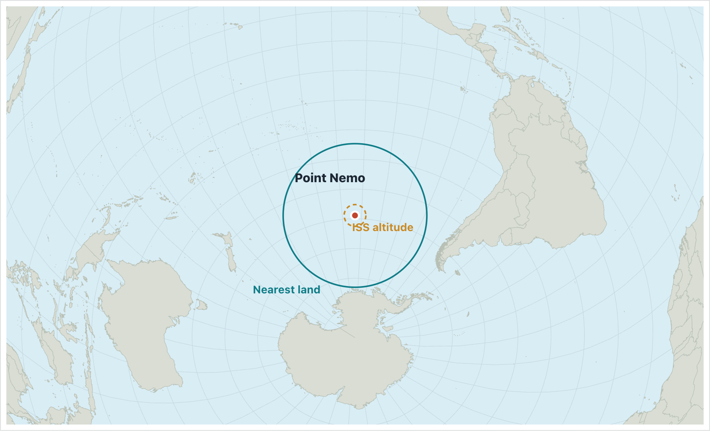

Explore by idea
H016What does the world look like when somewhere else is in the middle?
H015Could a real congressional district actually look like this?
H014How can the same country look almost empty — and unbelievably crowded?
H013How much of America holds 40% of its people?
H012How much of America is almost empty?
H011Could all the other planets fit between Earth and the Moon?
H010Could half the world's population really fit inside one circle?
H009Which state buys the most Ford F-150s?
H008What is the correct name for this sea?
H007How big is Africa... really?
H006Can two bowlers knock down the same 50 pins and finish 70 points apart?
H005How many people does it take before a shared birthday is more likely than not?
H004How long does someone remain the world's oldest person?
H003Can you win most of the seats without winning most of the votes?
H002How far can you get from everyone?
H001What’s the average income at this BBQ?
No exhibits found.

What does the world look like when somewhere else is in the middle?

Could a real congressional district actually look like this?

How can the same country look almost empty — and unbelievably crowded?

How much of America holds 40% of its people?

How much of America is almost empty?

Could all the other planets fit between Earth and the Moon?

Could half the world's population really fit inside one circle?

Which state buys the most Ford F-150s?

What is the correct name for this sea?

How big is Africa... really?

Can two bowlers knock down the same 50 pins and finish 70 points apart?

How many people does it take before a shared birthday is more likely than not?

How long does someone remain the world's oldest person?

Can you win most of the seats without winning most of the votes?

How far can you get from everyone?